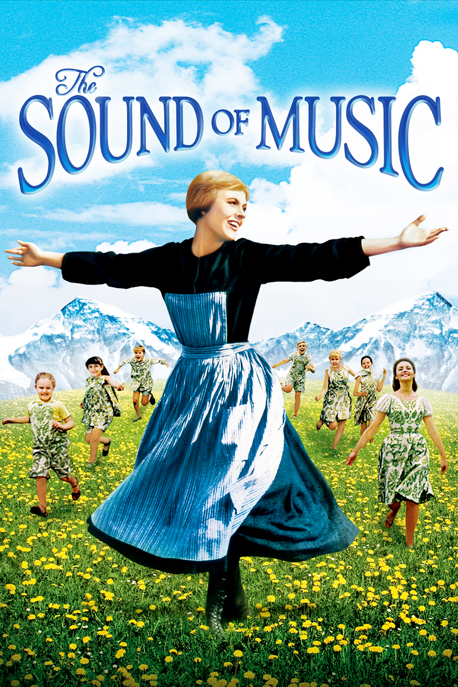

Top $10 Theater
 真善美（The Sound of Music）—1965 《真善美》（The Sound of Music），是一部改編自瑪麗亞·馮·崔普（Maria von Trapp）的著作《崔普家庭演唱團》 （The Story of the Trapp Family Singers）的戲劇作品，最初以音樂劇的形式於百老匯上演，之後被改編成電影， 位居北美影史票房第三名，同時也是史上最賣座的歌舞片。 該劇描述阿爾卑斯山上某處修道院裡的一位實習修女到崔普家擔任教職，然後從贏得孩童們的心， 到與單身的男主人相愛、結婚並組家庭樂團，最後又有驚無險的逃離納粹魔掌的故事。其中，該劇的諸多歌曲， 如《Do-Re-Mi》、《孤獨的牧羊人》、《小白花》、《My Favorite Things》傳唱至世界各地，並被翻唱成各國語言版本。 通貨膨脹計算器（1965-2015，單位：美元）：